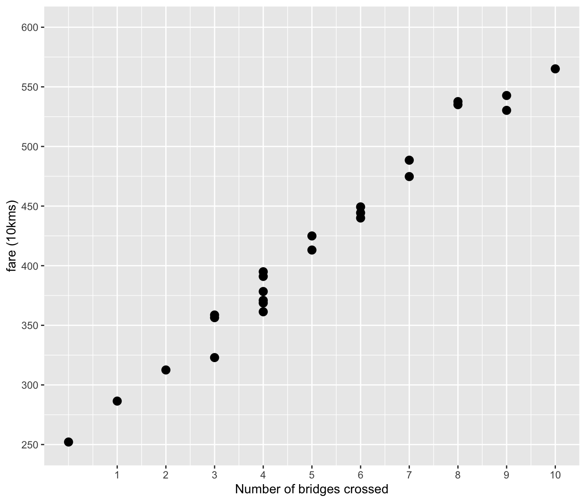

Chapter 8 Linear Regression with Many Predictors
In the previous section, we built linear models with one predictor. In other words, we had only one dependent variable and one independent variable.
| Model | Dependent Variable | Predictor |
|---|---|---|
| Taxi | Cost | Travel Distance |
| Processing | Reaction Time | Word Frequency |
In many real life scenarios, multiple factors will be involved in the outcome of a particular experiments. In other words, a particular dependent variable will be the outcome of more than one independent variable (predictors).
Let us consider our taxi example again. While our taxi model is primarily based on the distance we travel, sometimes we need to cross bridges or toll roads. These factors will obviously increase the cost as they get added to our total cost. The following is a simple example. You can download the data from Moodle or by just clicking this data link.
Let us see if there is any relationship between the number of bridges and the cost when we travel only 3 kilometers.

It looks like there is a decent positive correlation between the fare and the number of bridges crossed. So, we need to find a way to incorporate this into our linear model. The nice thing about linear models is that they allow us to incorporate multiple predictors each with its own slope.
\[ \underbrace{Y}_{\text{dependent variable}} = \overbrace{\underbrace{a}_{\text{intercept}}}^{\text{additive term}} + \overbrace{\underbrace{b_1}_{\text{slope}} * \underbrace{X_{1}}_{\text{predictor}}}^{\text{additive term}} + \overbrace{\underbrace{b_2}_{\text{slope}} * \underbrace{X_{2} }_{\text{predictor}}}^{\text{additive term}} + \ldots\]
In R, fitting a linear model with multiple predictors is quite simple. All we have to do is to add the predictors with a + in the lm() function as in lm(dependent variable ~ Predictor 1 + Predictor 2 + ...).
taxi_model_two_preds <- lm(cab_fares$taxi_fare ~ cab_fares$distance_km + cab_fares$n_bridges)
taxi_model_two_preds##
## Call:
## lm(formula = cab_fares$taxi_fare ~ cab_fares$distance_km + cab_fares$n_bridges)
##
## Coefficients:
## (Intercept) cab_fares$distance_km cab_fares$n_bridges
## 49.72 19.98 33.08The model is doing pretty well. The data coefficients I used to generate the data are as follows:
- intercept = 7
- distance slope = 6
- bridge slope = 13
I also added some random noise with the mean=7.5, sd=4.5. Let us also glance at the R2 and the p.values using the summary function. Alternatively, we could use the glance() function from the broom package. Give it a shot to see if you obsrve any differences.
##
## Call:
## lm(formula = cab_fares$taxi_fare ~ cab_fares$distance_km + cab_fares$n_bridges)
##
## Residuals:
## Min 1Q Median 3Q Max
## -50.081 -9.841 0.262 10.316 52.998
##
## Coefficients:
## Estimate Std. Error t value Pr(>|t|)
## (Intercept) 49.72151 1.53212 32.45 <2e-16 ***
## cab_fares$distance_km 19.98267 0.04014 497.87 <2e-16 ***
## cab_fares$n_bridges 33.08070 0.14820 223.22 <2e-16 ***
## ---
## Signif. codes: 0 '***' 0.001 '**' 0.01 '*' 0.05 '.' 0.1 ' ' 1
##
## Residual standard error: 15.05 on 997 degrees of freedom
## Multiple R-squared: 0.9966, Adjusted R-squared: 0.9966
## F-statistic: 1.449e+05 on 2 and 997 DF, p-value: < 2.2e-16## # A tibble: 3 × 5
## term estimate std.error statistic p.value
## <chr> <dbl> <dbl> <dbl> <dbl>
## 1 (Intercept) 49.7 1.53 32.5 2.93e-158
## 2 cab_fares$distance_km 20.0 0.0401 498. 0
## 3 cab_fares$n_bridges 33.1 0.148 223. 08.1 Fitting two Linear Models
In the previous section, we fir a linear model with two variables. The R2 we got was quite high. Let us run two models with one variable and see how the R2 values change.
distance_model <- lm(cab_fares$taxi_fare ~ cab_fares$distance_km)
bridge_model <- lm(cab_fares$taxi_fare ~ cab_fares$n_bridges)
distance_model##
## Call:
## lm(formula = cab_fares$taxi_fare ~ cab_fares$distance_km)
##
## Coefficients:
## (Intercept) cab_fares$distance_km
## 229.94 19.65##
## Call:
## lm(formula = cab_fares$taxi_fare ~ cab_fares$n_bridges)
##
## Coefficients:
## (Intercept) cab_fares$n_bridges
## 667.86 30.31It looks like the models are still doing pretty well in identifying the slopes. Let us now take a look at their R2 values.
## [1] 0.825201## [1] 0.1440328The results are very interesting. It looks like the number of bridges explains the cost more than the distance. Let us add the two R2 values to see if they add up to the same value as our multiple regression model did.
## [1] 0.996571## [1] 0.9692338Very close. Not too bad. It looks like when both of the predictors are taken into account, we might be able to explain even more variance but the difference is not huge.
What is kinda weird is that the bridge costs seem to be more important factor than the distance in this model. Consider the same kind of data except now the distances are longer and the number of bridges are still the same. It looks like the coefficients are still the same but the R2 values change. This is an important point to stop and think a bit about how your data impacts your results and what kind of conclusions you’ll draw from the data. It also shows the importance of the representativeness of your data. The key point is to get data that represents a typical taxi ride for a particular area (population)**. In most cases, we don’t cross that many paid bridges. Nor do we ride such long distances either.
distance_model_2 <- lm(cab_fares$taxi_fare ~ cab_fares$distance_km)
bridge_model_2 <- lm(cab_fares$taxi_fare ~ cab_fares$n_bridges)
#Print coefficients
distance_model_2##
## Call:
## lm(formula = cab_fares$taxi_fare ~ cab_fares$distance_km)
##
## Coefficients:
## (Intercept) cab_fares$distance_km
## 229.94 19.65##
## Call:
## lm(formula = cab_fares$taxi_fare ~ cab_fares$n_bridges)
##
## Coefficients:
## (Intercept) cab_fares$n_bridges
## 667.86 30.31## [1] 0.825201## [1] 0.1440328